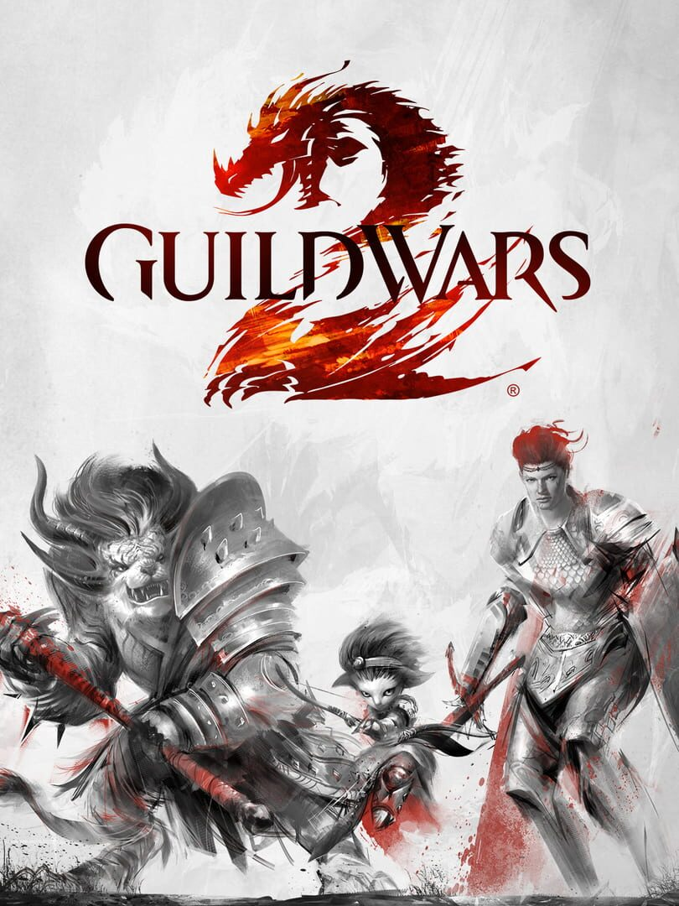

Guild Wars 2
Guild Wars 2
Detalhes
 |
|
| Tempo de jogo | Não Jogado |
| Última Atividade | Nunca |
| Adicionado | 07/06/2026 0:35:52 |
| Modificado | 07/06/2026 0:49:43 |
| Status de Conclusão | Not Played |
| Biblioteca | Steam |
| Fonte | Steam |
| Plataforma | PC (Windows) |
| Data de Lançamento | 25/08/2012 |
| Pontuação da Comunidade | 80 |
| Avaliação da crítica | 90 |
| Pontuação do Usuário | |
| Gênero | Adventure Role-playing (RPG) |
| Desenvolvedor | ArenaNet |
| Editor | NCSOFT |
| Funções | Co-Operative Massively Multiplayer Online (MMO) Multiplayer |
| Links | Wikipedia Subreddit Steam Discord Community Wiki Twitch YouTube Official Website |
| Tag | |
Descrição

O foco do mundo aberto de Guild Wars 2 é a exploração e a descoberta. Consulte o seu guia de conteúdo para ter sugestões ao se aventurar e use a bússola para encontrar marcos interessantes... ou escolha uma direção para seguir e deixe a aventura te encontrar ao longo do caminho. Tyria é repleta de personagens com histórias e objetivos, e você receberá recompensas ao ajudá-los — ou ao acabar com os planos deles— e ao completar corações renomados e eventos dinâmicos. Leia o nosso guia de iniciante para mais dicas!

Ao encontrar outros jogadores no mundo aberto, não é necessário formar um grupo para poder ajudá-los, investigar enigmas secretos juntos ou até mesmo derrotar um letal chefe de mundo aberto. Não precisa se aprimorar com atividades repetidas. Jogue como quiser! Você receberá pontos de experiência de muitas formas, seja revivendo jogadores caídos, resgatando soldados de um ataque violento de Risens ou até mesmo colhendo ervas.
Equipe seu personagem com uma variedade de novas armas ao longo do jogo. Cada profissão é única, e cada tipo tem o próprio estilo de jogo, que pode ser melhorado e personalizado ao desbloquear e equipar centenas de habilidades e traços. Se quiser ir direto ao PVP estruturado, fique à vontade. Todos os jogadores competem no mesmo nível, com acesso aos equipamentos de nível máximo e opções de conjuntos para mostrar a que vieram.
Se curte ter estilo, mostre isso a todos com o design de personagem perfeito! Ao equipar novas armas e armaduras, as aparências delas serão desbloqueadas em seu guarda-roupa. Mostre sua verdadeira face com milhares de combinações possíveis e uma enorme seleção de tintas colecionáveis.

Faça uma melhoria da sua conta com uma expansão de Guild Wars 2 e tenha acesso a recompensas por se conectar, personagens adicionais, mais espaço na mochila, características expandidas de chat e muito mais. Visite a Black Lion Trading Company no jogo e use a sua carteira do Steam para fazer a melhoria.

As expansões e as temporadas de Living World têm recompensas únicas e maestrias novas para expandir as habilidades do seu personagem. Desbloqueie e aprimore seu planador em Guild Wars 2: Heart of Thorns. Faça amizade com montarias com habilidades de movimento poderosas em Guild Wars 2: Path of Fire. Aprenda a pescar e navegar um esquife em Guild Wars 2: End of Dragons. Cada expansão dá acesso a nove especializações de elite que desbloqueiam novas escolhas de armas, habilidades e perícias para a sua profissão. É possível escolher a profissão revenant na criação de personagem e invocar heróis e vilões lendários da história de Tyria.
As temporadas de Living World dão continuidade à história de Guild Wars 2 entre as expansões e precisa ser adquirida separadamente pelo Story Journal ou na Gem Store Bundles. Jogue os episódios de Living World para desbloquear novas áreas exploráveis, recompensas e maestrias.
*Os episódios de Living World ficam disponíveis no nível 80. Pode ser necessário reiniciar o jogo para que a atualização funcione.
**Tenha em mente que as contas de Guild Wars 2 já existentes não podem ser acessadas pelo Steam